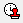
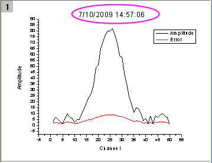
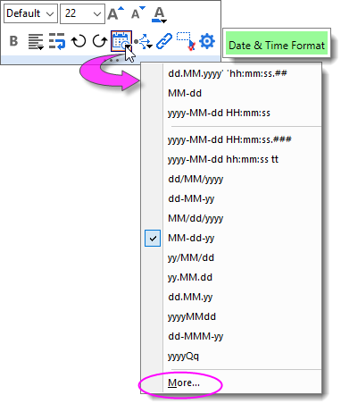

FAQ-157 Wie füge ich einen Datums-/Zeitstempel zu meinem Diagramm hinzu?
Letztes Update: 07.10.2022
Add-DateTime-Stamp-to-Graph
- Um das aktuelle Datum und die aktuelle Zeit oben in Ihr Diagrammfenster einzufügen, klicken Sie auf die Schaltfläche Datum & Zeit  (standardmäßig links unten von Ihrem Origin-Arbeitsbereich positioniert). Wenn Sie diese Schaltfläche nicht sehen, wählen Sie (Ansicht: Symbolleisten) und aktivieren Sie die Symbolleiste Objekt zu Diagramm hinzufügen.
- Um den Stempel zu löschen, klicken Sie auf ihn, um ihn auszuwählen, und anschließend auf Löschen.
-
- 
Der Datums- & Zeitstempel ist ein statisches Textobjekt. Er registriert das Datum und die Zeit, an denen auf die Symbolleistenschaltfläche geklickt wurde. Er wird mit dem Diagramm gespeichert und nur dann modifiziert, wenn Sie erneut auf die Schaltfläche Datum & Zeit klicken, während das Fenster aktiv ist. Beachten Sie, dass nur ein Zeitstempelobjekt zu einem gegebenen Fenster hinzugefügt werden kann.
Um das Datums-/Zeitformat des Stempels zu modifizieren:
-
- 
- Klicken Sie auf den Stempel, um ihn auszuwählen.
- Verwenden Sie die Schaltfläche Format auf der Minisymbolleiste Datum & Zeit, um Ihr Format zu wählen. Oder klicken Sie auf Mehr... und geben Sie eine Zeichenkette mit Datum/Zeit mit Hilfe dieser Formatspezifikationen für Datum und Zeit ein.
- Klicken Sie optional auf Als Standard setzen.
Wenn Sie das Format Ihres Datums- & Zeitstempels in einer früheren Version von Origin modifiziert hätten, hätten Sie es in einer Datei mit dem Namen Standard.ogs mit den Anwenderdateien (UFF) gespeichert. Sie können entweder (a) fortfahren, diese Datei zu bearbeiten (siehe nächsten Abschnitt) oder (b), falls Sie sicher sind, dass Sie keine anderen benutzerdefinierten Skripte in dieser Datei Standard.ogs brauchen, können Sie sie löschen und die neuere Methode der Zeitstempelanpassung verwenden.
 |
Diese Methode zum Hinzufügen eines "Zeitstempels" eignet sich nicht, wenn Sie einen "dynamischen" Stempel speichern wollen, der mit einer benutzerdefinierten Diagrammvorlage zusammen arbeitet. In solch einen Fall können Sie eine in der Origin-Hilfe beschriebenen Methoden verwenden.
|
Stempel in Origin 2021 und älter modifizieren
Per Standard fügt der Datums- & Zeitstempel Datum und Zeit im folgenden Format hinzu:
M/d/yyyy HH:mm:ss // z. B. 3/4/2021 15:19:58
Wenn Sie auf die Schaltfläche Datum & Zeit klicken, wird eine Skriptzeile im Abschnitt [DateTime] der Datei STANDARD.OGS ausgeführt, die sich in Ihrem Origin-Ordner befindet. Diese Skriptzeile liest sich wie eine der folgenden:
label -s -sa -dc (dXFactor*page.width) (dYFactor*page.height) -n timestamp $(@D,D10); // 2019b and earlier label -mg -s -sa -dc (dXFactor*page.width) (dYFactor*page.height) -n timestamp $(@D,D10); // changed v2020
Der Teil $(@D,D10) dieses Skripts legt das Datums-/Zeitformat fest. Dies entspricht dem 11. Format in der Datumsanzeigeliste von Origin (Zählung beginnt bei Null, daher ist (D10) = 11. in der Liste). Um die Liste zu sehen, öffnen Sie den Dialog Eigenschaften für eine beliebige Arbeitsblattspalte, setzen Sie das Format auf Datum und klicken Sie dann auf die Auswahlliste Anzeige. Denken Sie daran, dass die Zählung der Liste mit Null (0) beginnt.
-

Wenn Sie die Indexnummer des gewünschten Datumsformats kennen:
- Öffnen Sie die Datei STANDARD.OGS in einem Texteditor.
- Finden Sie den Abschnitt [DateTime].
- Finden Sie die oben erwähnte Skriptzeile.
- Ändern Sie D10 in Dn, wobei n das n-te Element in der Auswahlliste Anzeige ist, angefangen mit n = 0.
- Speichern Sie die modifizierte OGS-Datei in den Anwenderdateien (UFF).
- Klicken Sie die Schaltfläche Datum & Zeit an, um das modifizierte Format anzuzeigen.
Wenn Sie ein Format benötigen, das sich nicht in der Standardliste befindet, können Sie zwei Benutzerdefinierte Datumsformate auf der Registerkarte Sonstiges im Dialog Optionen definieren (Hilfsmittel: Optionen oder Einstellungen: Optionen), und sie werden unten in der Liste Anzeige aufgeführt.
Schlüsselwörter: Datum, Zeit, Stempel, Zeit Stempel, Diagramm benutzerdefiniert anpassen, Datum und Zeit hinzufügen, Zeitstempel, Stempel hinzufügen, Standard.ogs